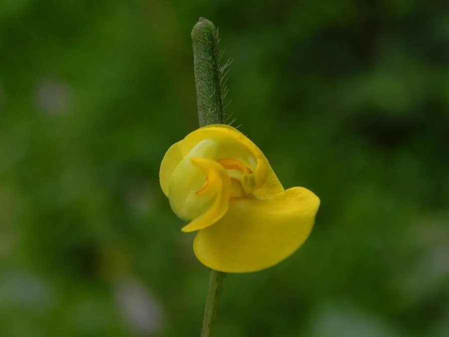

农作物与经济植物 · 植物界
绿豆 Vigna radiata

绿豆是重要的食用豆类，籽粒可煮汤、制豆沙和粉丝，夏饮绿豆汤可清热解暑，生育期短、耐旱耐瘠。
- 分类
- 门被子植物门纲双子叶植物纲目豆目科豆科属豇豆属
- 栖息环境
- 温带与亚热带的平原旱地，耐旱耐瘠薄，生育期短
- 地理分布
- 原产南亚与东南亚，现主产于印度、中国、缅甸等国
- 保护级别
- 暂无评估（栽培作物）
物种志
绿豆是一年生草本，株高 0.3–0.8 m，茎直立或蔓生，有棱，全株有短毛。叶片为三出复叶，小叶卵形。花黄色，蝶形，自花授粉。荚果细长，内含 4–10 粒种子，种子圆柱形或球形，多为绿色，也有黄、褐、黑色。根系有根瘤，能固氮养地。
绿豆原产南亚与东南亚一带，后传入中国，栽培历史已有 2000 多年，是亚洲重要的食用豆类。它生育期短，耐旱、耐瘠薄，可单作或与玉米等间作套种，根瘤菌能固氮提高土壤肥力。绿豆籽粒富含蛋白质、淀粉和多种矿物质，可煮汤、熬粥、制豆沙、发豆芽，也是制作粉丝和绿豆糕的原料；中医认为绿豆有清热解毒、消暑利水之效，夏季绿豆汤是常见的解暑饮品。
形态与习性
- 株高0.3–0.8 m，全株有短毛
- 叶三出复叶
- 花黄色蝶形花
- 种子多为绿色，每荚 4–10 粒
- 用途豆汤、豆沙、粉丝、豆芽
- 特性根瘤固氮，生育期短
趣味知识
- 绿豆汤是夏天常见的解暑饮品，中医认为绿豆能清热解毒。
- 绿豆的根上长有根瘤，能固氮养地。
- 绿豆生育期短，可与玉米等作物间作套种。